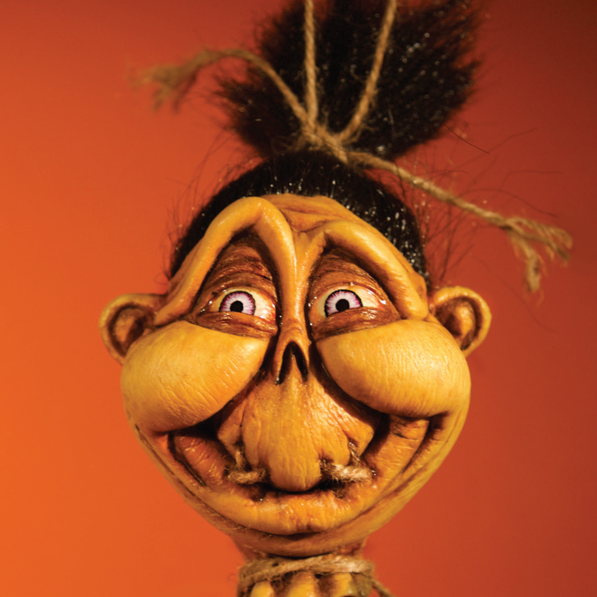
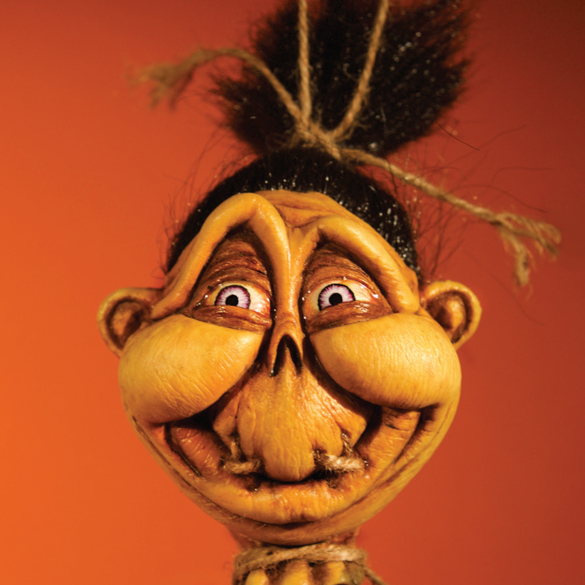

MARY CHAPP
Design & Illustration
A freelance project based on the work of KreatureKid’s handmade scupltures, these digital illustrations are to be soon made into enamel pins. KreatureKid, along with an associate of his, teamed up with me to make this happen. I first used Photoshop to sketch out a draft of the heads and then ported it over to Illustrator to vector the lineart. I have always taken an interest in making art that could be made into buttons, pins and other fashion accessories so learning about what is involved in making artwork to be scaled and used for such things is invaluable. Each section has to be blocked off by black since droplets of color are placed in each well. Mixing colors, fading them into gradients are out of the question. Only solid colors and depending on how many there are, the price can go up. Work such as this illustrates my ability to be versatile in style and my skills as an illustrator. While the pins are still being made, we are hoping to have them ready to be sold very soon. Once they are constructed, I will be able to showcase them in my portfolio. You can see more of KreatureKid’s work at: www.kreaturekid.com.


 
